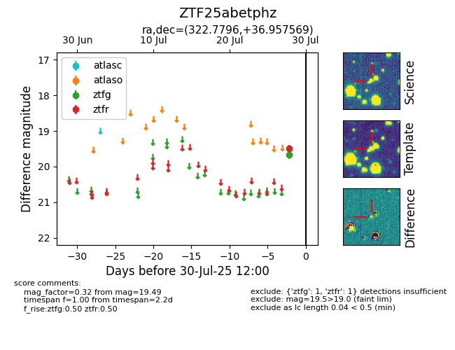

Target ZTF25abetphz at 2025-07-30 12:00, see:
FINK: fink-portal.org/ZTF25abetphz
Lasair: lasair-ztf.lsst.ac.uk/objects/ZTF25abetphz
ALeRCE: alerce.online/object/ZTF25abetphz
alt names
ZTF25abetphz (ztf,fink)
coordinates:
equatorial (ra, dec) = (322.7796,+36.95757)
galactic (l, b) = (84.3757,-10.49937)
photometry
last ztfg=19.66, ztfr=19.49
1 ztfg, 1 ztfr detections
